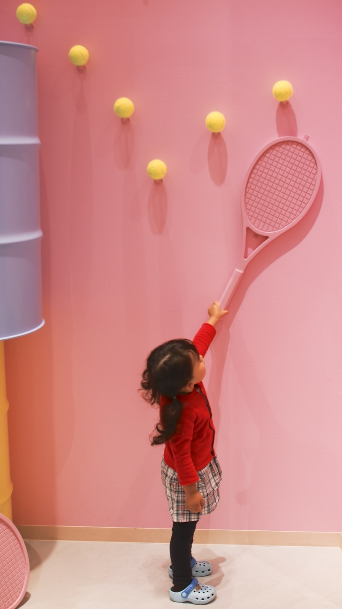
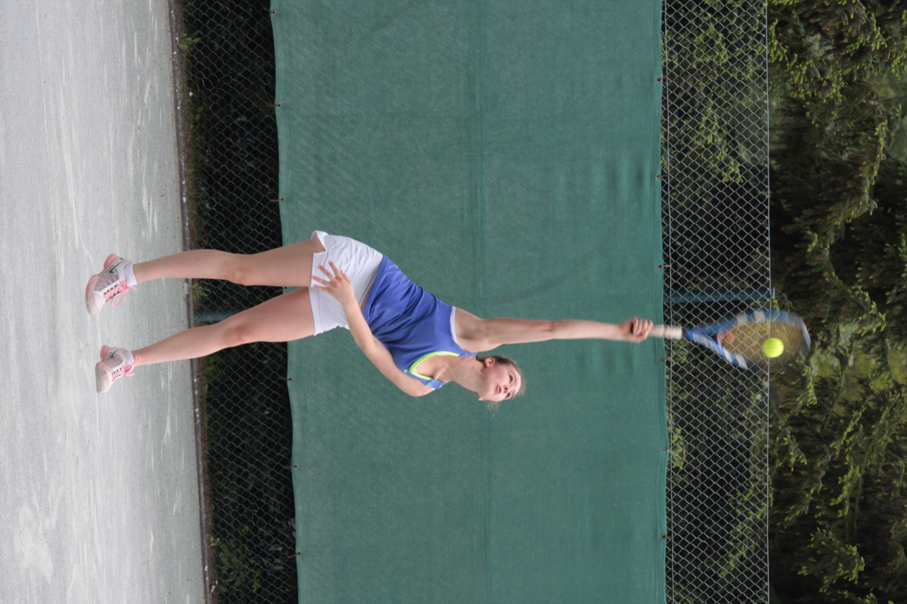

Tennis basics — what to do
Cambridge learners · Christ's Pieces · rally first, score later
One A4 page · bring racket, balls, shoes, water, tea, cup






On court (45 min)
- 0–10 min: cooperative rally
- 10–25 min: cross-court forehand, then backhand
- 25–40 min: mini games to 7 — say the score out loud
- Last 5: pack balls, leave if the next booking waits
Score in one line
- 0 → 15 → 30 → 40 → game
- 40–40 is deuce; win two in a row
- Four people = doubles. Talk: yours / mine
- Be on time: PIN works 10–15 min before the slot
Photos: Wikimedia Commons (CC / public domain) — grip: SAKIKO how to grip a racket; forehand: démonstration du coup droit; backhand: Andy Murray backhand (stroke example); serve: Tennis-Aufschlag; volley: Colin Fleming volley; ball: Tennis ball. This sheet is for learners, not a coaching licence. https://rifaterdemsahin.github.io/tennis/learn.html